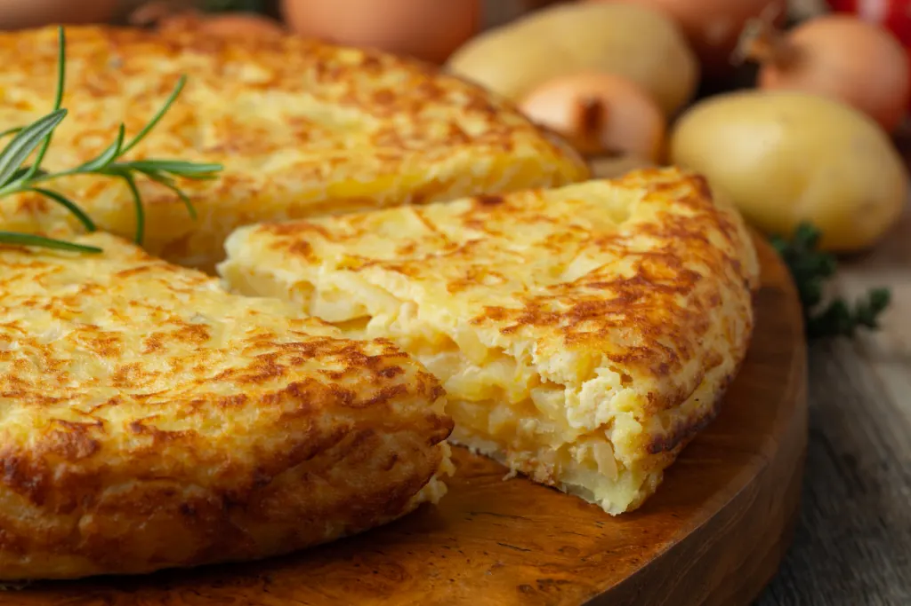

Home
Tortilla de Patatas Recipe

Description
This is a recipe for spanish tortilla as I learned it from an old Spanish girlfriend.
The plaque on the bottom of the pan after frying the potatoes and onion
is also regarded as a specialty.
Ingredients:
- 500 gr potatoes, sliced
- 1 medium onion, cut
- garlic, if you like
- 4 eggs
- olive oil
- salt and pepper to taste
Steps:
- Heat up a big frying pan, add quite bit of olive oil and simmer
onion till golden.
- Add garlic and potatoes and slowly simmer till tender while
stirring once in a while. Add salt and pepper to taste.
- Let the potatoes cool down and in a bowl stir the eggs with some oil.
- When the potatoes have cooled down, mix them with the eggs.
- Heat up a frying pan, add some oil and slide in the egg/potato mix.
- Simmer till it is almost, but not too dry, cover with a big plate,
turn the tortilla over and slide it back in the pan.
- Simmer for a couple of more minutes, slide it on a plate and serve.